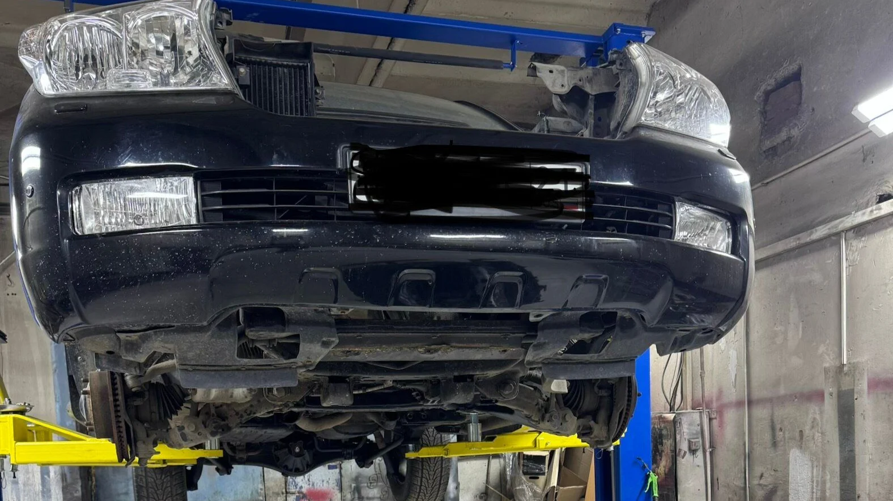
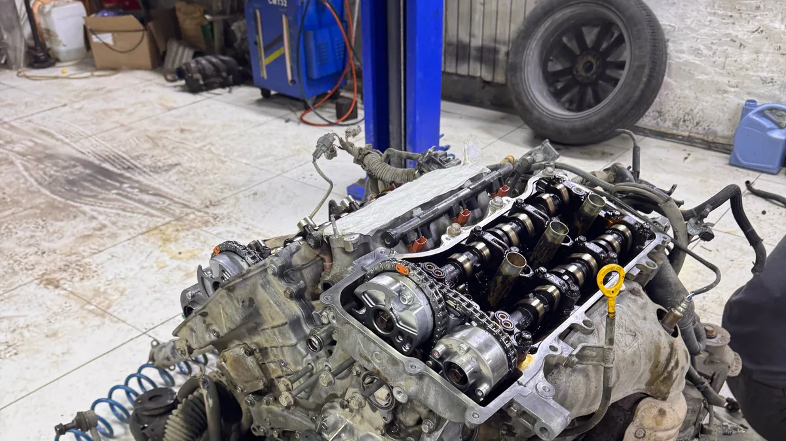
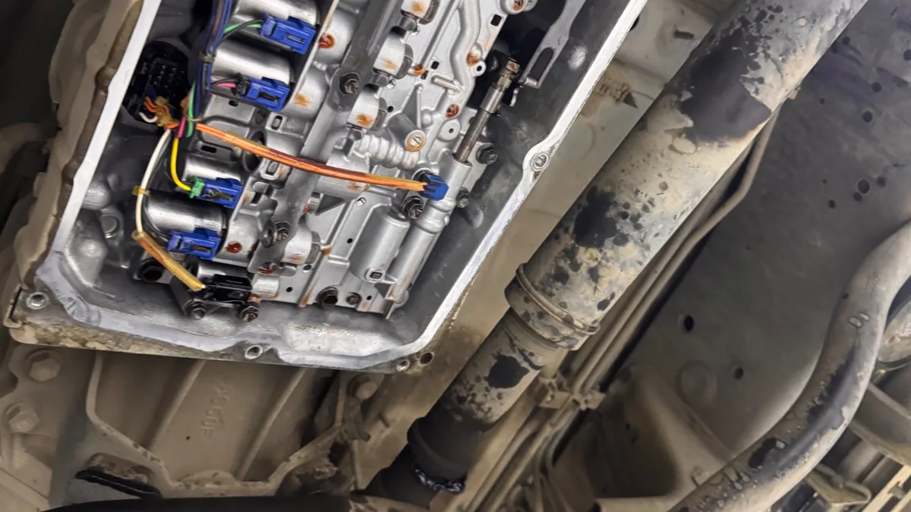
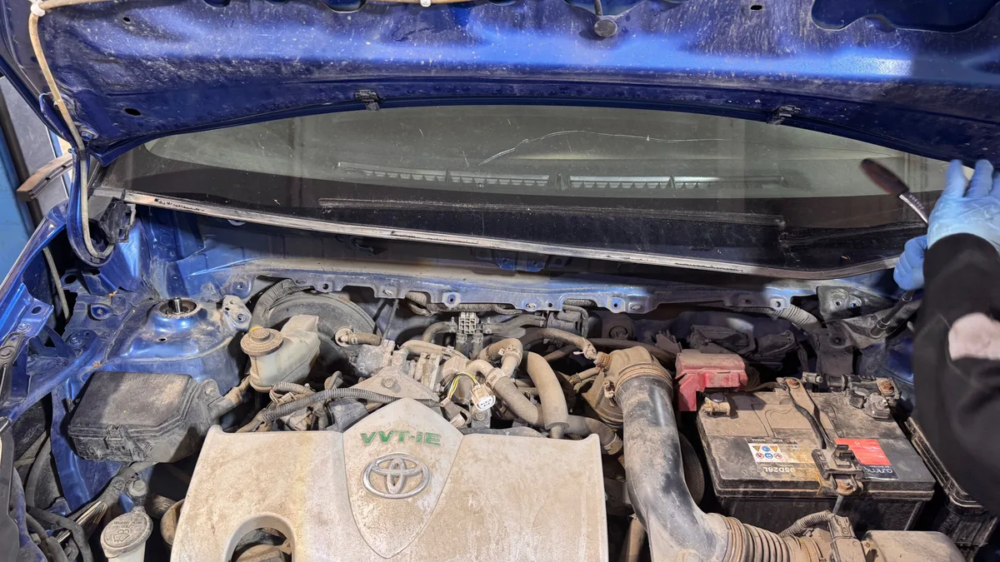

Ремонт Тойота в Чебоксарах · ул. Фёдора Гладкова, 7Е
Ремонт и обслуживание Тойота и японских авто в Чебоксарах
Автосервис «Клуб Тойота» на улице Фёдора Гладкова, 7Е: диагностика, ремонт двигателя, электрика, обслуживание. Специализация - Тойота и японские автомобили.
- 4,7 на Яндекс Картах
- Тойота и японские авто
- Пн-Пт с 09:00 до 18:00

Услуги автосервиса «Клуб Тойота» в Чебоксарах
Входит
- Диагностика Тойота и японских автомобилей
- Электрика: ключ, запуск двигателя
- Ремонт двигателя
- Техническое обслуживание
Отдельно, если нужно
- Запись на время через форму на сайте, затем звонок для подтверждения
- Адрес: Чебоксары, улица Фёдора Гладкова, 7Е
- Есть парковка и Wi-Fi
Цены на ремонт и диагностику в Чебоксарах
Стоимость зависит от модели и неисправности. Мастер называет её после диагностики и согласует до начала работ.
Диагностика и электрика
- Компьютерная диагностикауточнить
- Электрика, ключ и запуск двигателяуточнить
Ремонт
- Ремонт двигателяуточнить
- Техническое обслуживаниеуточнить
Точные цены уточняйте по телефону перед визитом.
Как записаться в автосервис в Чебоксарах
- 01
Выбрали услугу и время
Выберите услугу, день и час в форме - заявка сформируется, дальше позвоните по номеру +7 (927) 862-90-99. Марку, год и что беспокоит расскажете по телефону.
- 02
Подтвердили время
Время подтверждаем по звонку: +7 (927) 862-90-99.
- 03
Диагностика и согласование
Мастер осматривает автомобиль, находит причину, называет работы и стоимость. Дальше - по вашему решению.
- 04
Выдача автомобиля
Осмотрите результат вместе с мастером до оплаты.



Что пишут клиенты: Клуб Тойота
Знают Тойоту
«С большим опытом в сфере ремонта и обслуживания Тойоты» - Алексей Иванов, 4 октября 2025.
Находят причину и объясняют
«Ребята сразу провели грамотную диагностику, чётко объяснили суть проблемы и варианты решения» - Наталия Осипова, 8 мая.
Устраняют электрику
«Компьютер не считывал ключ. Машина с кнопки не запускалась. Электрик Кирилл все устранил в короткие сроки» - Олег Моисеев, 22 сентября.
Отзывы с Яндекс.Карт
«Отличный сервис . Ребята знают своё дело! Ремонтировал Тойоту. Компьютер не считывал ключ. Машина с кнопки не запускалась. Электрик Кирилл все устранил в короткие сроки! Цены адекватные!»
Олег Моисеев · 22 сентября
«Прекрасное место, работают парни знающие свое дело. С большим опытом в сфере ремонта и обслуживания Тойоты, что не мало важно в отсутствие брендированого СТО Toyota в городе.»
Алексей Иванов · 4 октября 2025
«ребята сразу провели грамотную диагностику, чётко объяснили суть проблемы и варианты решения.»
Наталия Осипова · 8 мая
Отзывы с карточки на Яндекс.Картах, без правок.
Частые вопросы
С какими автомобилями вы работаете?
Специализация - Тойота и японские автомобили. Если у вас другая марка, уточните по телефону +7 (927) 862-90-99.
Какие работы делаете?
Диагностика, электрика, ремонт двигателя, техническое обслуживание.
Сколько стоит ремонт?
Стоимость зависит от модели и неисправности. Мастер называет её после диагностики и согласует до начала работ.
Нужно ли записываться заранее?
Лучше записаться: выберите услугу, день и время в форме на сайте, затем позвоните по номеру +7 (927) 862-90-99 для подтверждения.
Когда вы работаете?
С понедельника по пятницу с 09:00 до 18:00. Суббота и воскресенье - выходной.
Где находится сервис?
Чебоксары, улица Фёдора Гладкова, 7Е. Есть парковка и Wi-Fi.
Запишитесь на диагностику Тойоты
- Адрес
- ул. Фёдора Гладкова, 7Е, Чебоксары
- Часы
- Пн-Пт 09:00-18:00
- Телефон
- +7 (927) 862-90-99